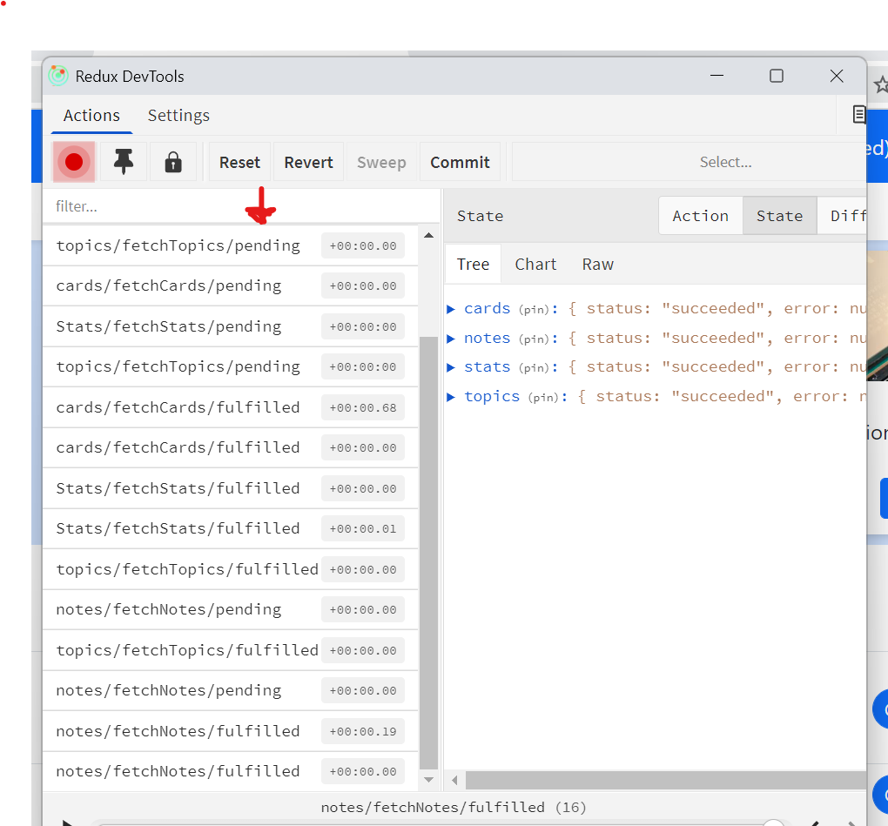

Improve React performance
- Why should use createAsyncThunk
CreateAsyncThunk is not an overkill. If we create a thunk function that takes dispatch and getState as arguments, the function has no action type and so we cannot track its status in Redux Devtools. It is not a best practice.
In my view, in terms of asynchronous data fetching, First
export const fetchTopics = createAsyncThunk('topics/fetching',async()=>{ const response = await fetch(...) return response.data })Second,interface TopicsState{ status:'idle' | 'loading' | 'succeeded' |'failed' error: string | null |undefined data: Topic[] } const initialState: TopicsState = { status:'idle', error:null, data:[] } export const Topics = createSlice({ name:'Topics', initialState, reducers:{...}, extraReducers: (builder)=> { builder.addCase(fetchTopics.pending, (state:TopicsState) =>{ state.status='loading' }) builder.addCase(fetchTopics.fulfilled, (state: TopicsState, action: PayloadAction<Topic[]>) => { ... }) } }) -
Why should use reselect?
In the below example, I get a status property in two ways: StatusSelector will be called when any change happens in root state. On contrary, memoizedStatusSelector is only called when the books entity's status changes.
import {createSelector} fro '@reduxjs/tookit' ... export const statusSelector = (state:RootState)=>state.books.status export const memoizedStatusSelector = createSelector( (state:RootState)=>state.books.status, (status)=>status ) - PWA in React
- create icons for your project. Google search: icon png
- create favicon. Google search: Png to favicon
- create manifest file . Google search: manifest generator
- Generate different sizes of images usinsg imageresizer.com
- Create a maskable image using maskable.app/editor
- Create a PWA template project and copy service work related files from it to your project
npx create-react-app my-react-project --template cra-template-pwa-typescript - Attention to downsides of PWA: Updates will not be reflected on apps immediately. Users need click the fresh button to update apps when notification appears.
Code hosted on Github. Here!